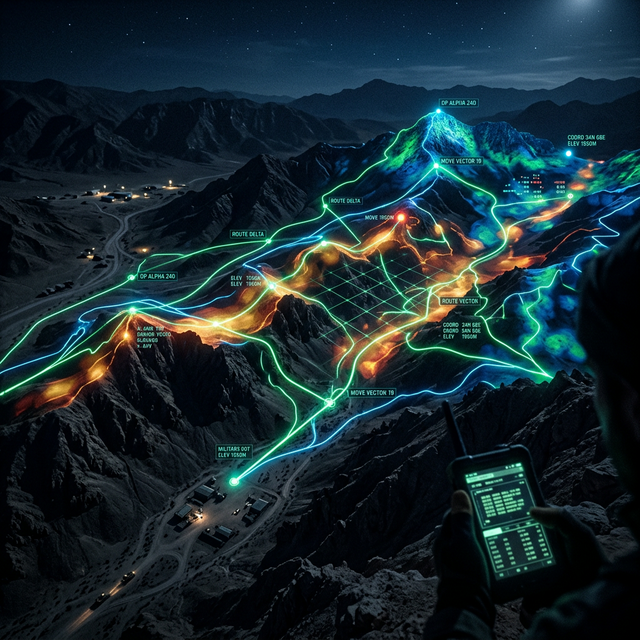
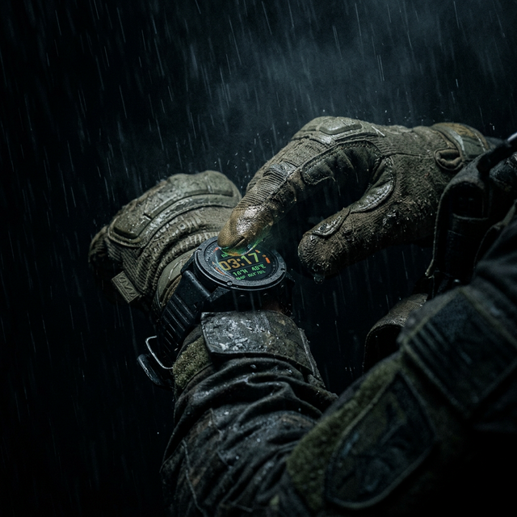
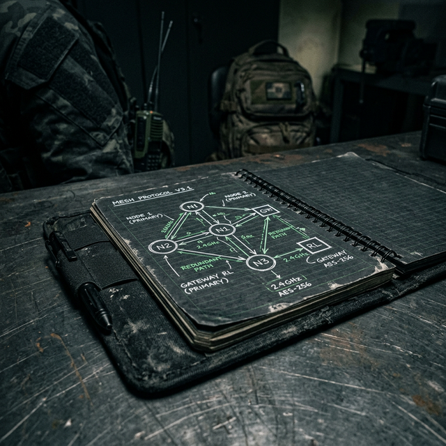
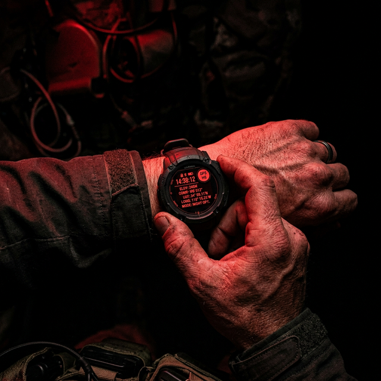
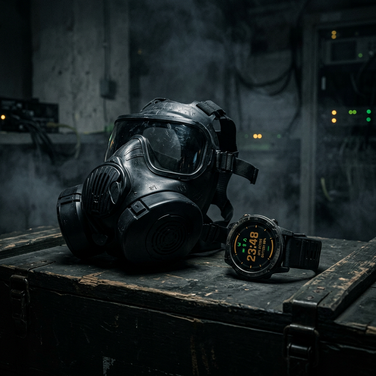

Armis Technologies OÜ · Tallinn, Estonia
Designing a tactical wearable for soldiers who cannot touch a screen, in darkness, under fire, with gloves on.
Chapter 01
Origin
In November 2017, Strava released a global activity heatmap — 3 trillion GPS data points from fitness trackers around the world. It was beautiful. And it was a disaster.
Analysts noticed within days. Bright lines of jogging routes carved through remote desert in Afghanistan. Systematic oval patterns appearing in locations that weren't supposed to be on any map. Forward Operating Base Kamp Lemonnier in Djibouti. A suspected CIA black site in Somalia. Every soldier who had gone for a morning run while wearing a Fitbit had contributed to a map that enemy intelligence could now read.

NATO's emergency review found what most people already suspected: there was no purpose-built, OPSEC-compliant wearable at the infantry squad level. The market had consumer devices on one end — Garmin, Fitbit, Apple Watch, all designed around cloud sync as a feature — and full soldier-digitization programs on the other, like IVAS, too expensive and complex for general issue. The gap was large and obvious.
Armis Technologies, a defense-tech firm founded in Tallinn with deep ties to NATO's Cooperative Cyber Defence Centre of Excellence, commissioned VIGIL to fill that gap. I was brought in as lead designer eight weeks into the project, after the first design attempt — a lightly reskinned Garmin-style interface — was rejected by the client's military advisor on first review.
The previous attempt treated OPSEC as a settings menu — a toggle the soldier could turn on or off. The military advisor's feedback was immediate: 'OPSEC isn't a preference. It's the default state. Design it that way.' That single piece of feedback restructured everything. I spent the first two weeks not designing screens, but rewriting the brief.
Chapter 02
User Research
I had no direct access to soldiers in deployment — Armis's security protocols prevented any primary research with active-duty personnel until later in the project. What I had was secondary research: documented incident reports, training fatality reviews, exercise after-action reports from NATO member states, and direct interviews with four military veterans: a medic, a light infantry platoon commander, a signals operator, and a veteran of urban operations in Eastern Europe.
The most important research finding wasn't about technology at all. It was about human physiology under adrenaline.
Tachypsychia is the distortion of time perception that occurs in high-stress situations. Heart rate spikes above 145 BPM: fine motor skills degrade. Above 175 BPM: complex cognitive processing becomes unreliable. A soldier in contact may have a heart rate of 160–190 BPM. Fine motor movements — typing a PIN, selecting from a nested menu, scrolling through options — become nearly impossible.
Consumer wearable interfaces are designed for a user with 85 BPM, warm hands, a stable position, ambient light, and 30 seconds to spare. The VIGIL user might have 185 BPM, gloved hands, prone position, darkness, and 3 seconds to spare. These are not variations of the same design problem. They are different problems.
Any interaction that requires more than one physical input in sequence was automatically disqualified from being a primary action. This ruled out: swipe gestures, touch and hold, any multi-tap shortcut. Physical crown + single button press only.
Standard NATO combat gloves have a palm thickness of approximately 4mm. Thin tactical gloves are 2mm. Capacitive touchscreens stop registering touch at approximately 1.5mm of non-conductive material above the screen. Military advisors were consistent: in operational conditions, soldiers don't carry styluses. They have whatever gloves they issued that morning.

My initial architecture had physical controls as primary and touch as secondary. Testing with borrowed tactical gloves showed that 'secondary' became 'unavailable.' If the interface degraded gracefully when touch was unavailable, fine. If it degraded when you removed touch, several flows I'd designed became dead ends. The entire navigation model had to be rebuilt.
The most emotionally weighted interview was with a former combat medic who had served in Mosul. He described a specific failure mode he'd experienced repeatedly: a soldier goes down on the other side of a building. The medic has no visibility, no comms, and has to make a triage decision — move toward them and potentially expose the squad, or hold position and risk a delayed response.
The medic wasn't asking for a miracle — they were asking for earlier signal. Not a diagnosis, not a precise reading. Just: this person might be down. Look toward them. That's the design problem the W-07 Casualty Alert and the Medical Dashboard were built to solve.
Chapter 03
Framing
Three weeks into research, I wrote a framing document that I made the engineering team and the client read before I showed them a single wireframe. It started with one sentence:
A feature can be toggled off. An axiom cannot. The design decision cascade from treating security as an axiom looks like this:

Every feature scope decision in the project flowed from that axiom. The brief wasn't a list of features to implement — it was the logical consequences of a single design principle applied consistently.
Before designing anything, I audited every wearable currently used in military or law enforcement contexts.
| Product | Hardware | Critical Gap | VIGIL Position |
|---|---|---|---|
| Garmin Tactix | Best-in-class ruggedness | Syncs to Garmin Connect cloud. No squad mesh. No biometric sharing. No haptic vocabulary. | Not competing — different architecture |
| Apple Watch Ultra | Excellent hardware resilience | iOS-locked. Siri is a liability in an operational context. Zero squad integration. | Not competing — consumer architecture |
| IVAS | Actually solves the problem | $400,000/unit. Requires 20 min to don. Needs a trained operator. Not for general issue. | Not competing — cost tier |
| VIGIL | Purpose-built rugged | Squad-level, affordable enough for general issue, OPSEC-native by architecture. | Fills the gap |
Chapter 04
Design Round 1
Round 1 was built on sound foundations: IBM Plex Mono for military data aesthetics, a rigorous dark color system, physical-control-only primary navigation. The five modes were defined and designed. The casualty alert flow was prototyped in Figma. I presented it to the Armis team and the military advisor at week 8.
The feedback session lasted ninety minutes. What the military advisor said at the end became the most useful design critique I've received in eight years:
A dot with no label is unreadable under stress in under 1 second. Soldiers need to know what degraded means, not just that it is degraded. What action do I take? The dot gave none of that.
10 seconds is not long enough for a conscious soldier to respond if they're injured and disoriented. Research on confusion states post-injury suggests 15–20 seconds is the minimum. Changed to 15 seconds.
Testing with tactical gloves: completely unavailable in gloves. Mode switching moved entirely to crown rotation. Swipe gestures removed from all primary flows.
At night, on a 1.4-inch screen, full name labels made the squad view unreadable at a glance. 3-character callsigns (KOW, BRA, ALF) are readable in 200ms. Full names require 600ms to parse.
I had been testing the prototype in a bright room, sitting at a desk, without gloves, with no time pressure. The conditions that broke it — darkness, gloves, motion, stress — I hadn't simulated. Round 2 started with a testing protocol change, not a design change.
Chapter 05
Methodology
Before beginning Round 2 design, I spent one week redesigning how we were testing. This is the work that doesn't show up in case studies, because it's not visual. But it's the work that made everything after it trustworthy.

Round 1 passed my own testing because I was testing in good conditions. If I hadn't been testing at all, the advisory session would have revealed the same problems. The false confidence of 'I tested this' was actively harmful. I also began adversarial simulation — giving the prototype to people unfamiliar with the design and deliberately creating uncomfortable test conditions. Stress reveals what calm conceals.
Chapter 06
Design Round 2
Round 2 focused narrowly on fixing the four failures from Round 1 and validating each fix under the new testing protocol before moving on. This made the round slower and more disciplined.
The dot became a banner. When GPS degrades, a strip appears at the top of W-01 with two pieces of information: what has happened (DR ACTIVE) and what it means (confidence radius). The dot remains as a quick glance indicator, but degraded states now always surface actionable information, not just status.
The first version of the DR banner used red text on a dark background. Testing showed that any red on screen in a non-alert context desensitizes soldiers to red alerts. Changed DR banner to amber. Red reserved exclusively for life-critical alerts (casualty, CBRN).
The casualty alert countdown was extended to 15 seconds, with haptic pulses every 3 seconds. Testing showed something unexpected: the haptic pulses served as a consciousness check, not just a timer. Participants who were groggy or disoriented responded to the haptic pattern even when they didn't initially notice the visual display. This became an explicit design principle: haptic patterns should communicate, not just accompany.
Round 2 resolved the four Round 1 failures. But adversarial testing introduced a new problem: nobody could remember the haptic dictionary. The first 3–4 signals (Halt, Move, Danger, Acknowledge) were remembered reliably. Beyond that, recall collapsed under stress.
Research on tactile memory and haptic disambiguation under stress suggested 4–6 distinct patterns as the reliable upper limit for untrained users. We were asking soldiers to learn and recall 8 under high stress. The haptic plan builder was redesigned to cap at 6 signals by default, with a hard maximum of 8 and an explicit warning when approaching the limit.
Chapter 07
Design Round 3
Round 3 introduced the CBRN alert system. I had considered it a straightforward extension of the existing alert hierarchy. I was wrong.
CBRN is categorically different from every other alert in the system. A casualty alert is about another person. A GPS degradation alert is about a navigation problem. CBRN is about your own immediate survival. The response time is different. The cognitive state is different. The design problem is different.
My first design of W-13 CBRN Active showed six pieces of information: threat type, detection confidence, wind direction, wind speed, evacuation bearing, distance to safe zone. A medical officer I consulted looked at it and said: 'When someone smells gas, they stop reading.'
CBRN alert redesign principle: one number, one action. The evacuation bearing is the only thing that matters in the first three seconds. Everything else is secondary. The design reduced to: bearing (large), direction arrow (large), threat type (small, below).

Initial CBRN design had 'UNKNOWN' as the threat type when sensor couldn't identify the agent. Testing showed 'UNKNOWN' increased panic and decision freeze in participants. Changed to 'EVACUATE — TYPE UNCONFIRMED'. The word 'EVACUATE' tells you what to do. 'UNKNOWN' tells you nothing useful.
CBRN alert requires an optional sensor pod. This introduced a problem I hadn't anticipated: what does the UI do when the sensor pod is present but not calibrated? When it gives a false positive? False positives were a critical concern — sensors in early prototype testing triggered on diesel exhaust twice and cleaning product once. A false CBRN alert causes the squad to break formation and potentially expose themselves to actual threat.
The instinct was to simplify the CBRN alert by hiding confidence levels. But the military advisors were clear: a soldier who knows they have a low-confidence alert makes better decisions than one who doesn't know. Trust in the system depends on the system being honest about what it knows.
Chapter 08
VIGIL Mobile
VIGIL Mobile was nearly cut from scope in week 14. The Armis engineering team raised a legitimate concern: a companion app doubles the development effort, and the watch is the mission-critical product. The argument that won was not about features — it was about the system.
The first version was too powerful — a full GIS interface with layer controls, vector editing, and coordinate transformations. The feedback from a former platoon commander during a user session was blunt: 'I'm not a cartographer. I need to drop pins on a map, give them names, and push a button.'
The third version found the right level: map interaction for spatial thinking, list interaction for sequence editing, separate flows for threat markers and haptic plans.
SRS ring is the dominant element on each card. Everything else is secondary. Color of card border encodes triage tier: green / amber / red pulse. This is the only information the medic needs to do initial triage. Detail available on tap. The reduction of visible information was the most counterintuitive design decision in the project — and the right one.
Chapter 09
Honest Post-Mortem
Four things in the final design I'm not satisfied with, and what I would do differently with more time.
The After Action Review timeline scrubber (M-20) works. It does what it needs to do. But it's the least thoughtfully designed screen in the product. The potential of that data — GPS tracks, biometric timelines, event markers, squad positions — is enormous for training improvement and incident investigation. The scrubber I shipped is functional, not excellent. A second pass would explore overlay density controls, synchronized biometric detail, and event-clustering to make the timeline scannable at mission-length scale.
The haptic dictionary is loaded before a mission. But there's no mechanism for soldiers to practice recognizing signals before they need to use them under stress. A training mode — where the watch randomly fires signals and the soldier has to identify them — would dramatically improve recall reliability. I identified this problem in Round 2 and didn't have time to design the solution before the project deadline.
The OPSECStatusBar in VIGIL Mobile was designed to provide persistent awareness of encryption posture. In testing, within 2 days of use, participants stopped looking at it entirely — it became wallpaper. Persistent status indicators suffer from habituation. The right solution is probably a change-detection model: invisible when everything is correct, surfaces only when something changes. I designed it as always-visible because I was worried about hiding safety information. I should have trusted the user more.
The Mission Builder requires the map to be cached before deployment. The prompt for this is buried in the pre-mission OPSEC check and doesn't surface until the user tries to sync to watches. A first-time user would not know to cache the map until they hit the error. This is an onboarding failure. Map caching should be surfaced immediately when a mission is created, not at the point of failure.
Chapter 10
Output
VIGIL went from brief to complete design in 6 months. The output was 67 screens, 84 components, a dual-track design system, and a 90-page product specification document. Engineering began Q2 2025.
What makes this project useful as a design artifact isn't the final UI. It's the specific design decisions that trace directly back to real operational constraints: the 15-second countdown built on injury confusion-state research, the triage-first Medical Dashboard built on medic mental models, the crown-only navigation built on glove testing, the confidence-radius dead reckoning built on GPS jamming doctrine.
Chapter 11
Principles
Six things I would take into the next project.
Test in the conditions the product will actually be used in. Not vaguely similar conditions. Exact conditions. If the product is for hands in gloves, design with gloves on from day one.
Rewrite the brief before designing anything. The first design attempt failed not because of execution but because it was solving the wrong problem. Reframing the OPSEC constraint from feature to axiom changed everything downstream.
Less information, earlier, is better than more information, later. The Medical Dashboard, the CBRN alert, and Squad Mode all became better by removing information that seemed important but wasn't actionable in the first three seconds.
The most important design work is the work nobody sees. The testing protocol redesign after Round 1 didn't produce any screens. It produced trustworthy testing. That's the foundation everything else was built on.
What you don't design is as important as what you do. The decision to make the ambient watch face contain only a mission clock — and nothing else — was a deliberate omission. The impulse is always to add. The discipline is in what you remove.
Name the failures. Documenting Round 1 failures explicitly, by number, made them correctable. Unnamed problems get worked around rather than fixed. Round 2 would have been a repeat of Round 1 if I hadn't been honest about what Round 1 failed to do.